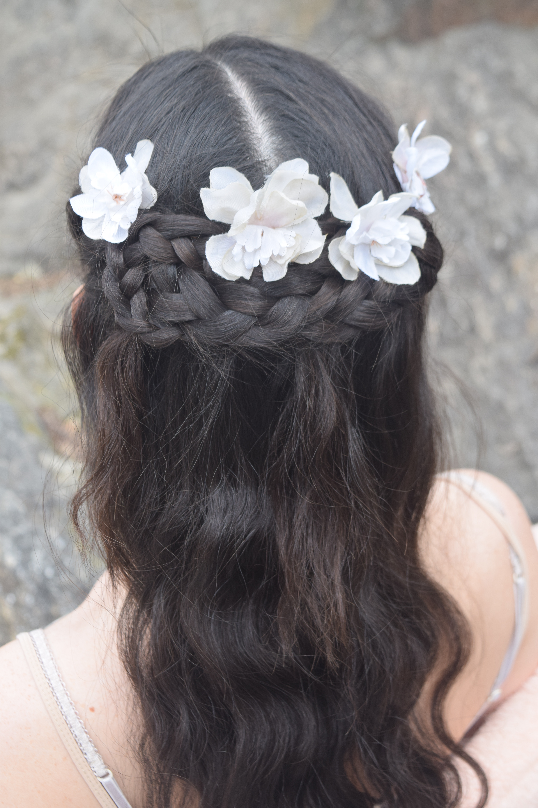
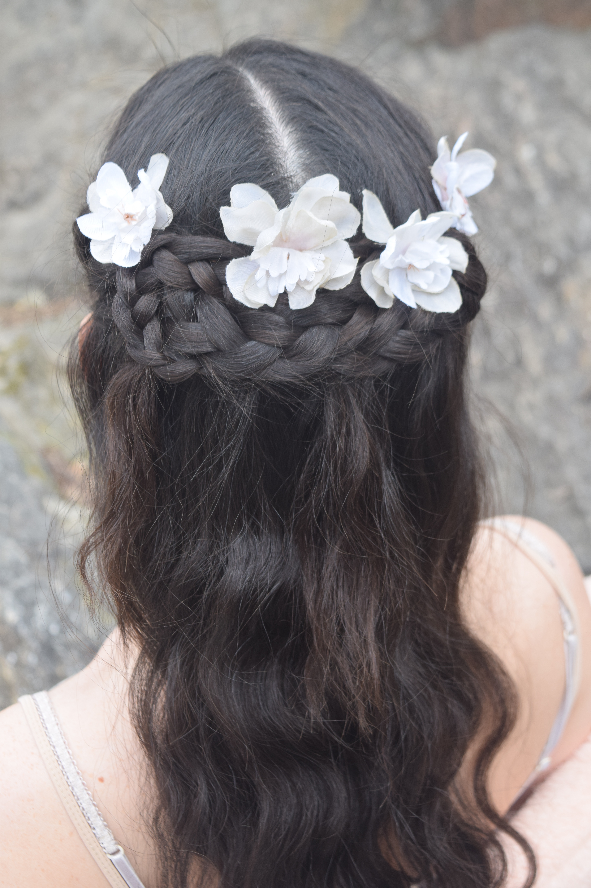

thehealthyblogger Sketch! 💗 Muchos de ustedes me recomendaron ir. Londres tiene estos lugares tan unicos, bizarros, diferentes que valen la pena conocer. Es una galeria de arte, pero no es simplemente eso. Podes desayunar, brunchear, almorzar, cenar o tomar el famoso 5 o’Clock tea. Hay que reservar si o si via internet! Yo cuando quise hacerlo solo habia lugar para el desayuno (me hubiese gustado ir al té). Desayunar cuesta entre 10-15£ aprox y el 5 o’clock tea £58. Independientemente de cual sea tu visita, podes recorrer el lugar y sus diferentes sectores. Cada espacio es especial y con detalles unicos. Los baños por ejemplo, eran esos huevitos que ven en la segunda foto. Mi sala preferida fue definitivamente la rosa! Para mi vale 100% la pena ir!
camilacoelho Getting ready for tonight #DIORADDICTLACQUERPLUMP party💃🏻 I'm taking over the @dior
stories - so make sure to follow me there! #Dior @diormakeup --------
Me arrumando pra festa de hoje com a Dior! Estou fazendo takeover no stories da marca, me acompanhem
por lá também!!!❤
lacalurivero #Repost @solarmag.es・・・
¡La espera terminó! Anunciamos el próximo lanzamiento de nuestro nuevo número, #Solar05, con tres
portadas. La primera con @lacalurivero fotografiada por @christian_ferretti y entrevistada por
@marourivero. Calu nos habla sobre su postura ante el movimiento #NoEsNo y como pretende concientizar
a su casi millón de seguidores a siempre luchar con la verdad. “Estar a un clic de encontrar a alguien
que piense igual, de un asistiré a un encuentro por una causa común, de un like a una expresión
artística que eleve una lucha de todxs es una gran oportunidad y una gran responsabilidad”.
Calu viste mono de @kitsnyc y collar de @ellagemny. Realización de @micalovesthis. Maquillaje de
@frankieboyd y peinado de @hairjordan. Producción: @chloemminax. #Solar05 muy pronto disponible en
España, Europa y el resto del mundo. 🔥#CaluSolar #Solar05 #Solarmag #ClanSolar / En 🇦🇷, en 🇪🇸 ,
en todo el 🌎 #noesno
ihaveathingwithskiess Pretty pretty [ @jaesevilla10 ] #ihaveathingwithskies • • • • • • • • • #france #prettyskies #blueskies #cloudless #prettyview #frenchalps
ubuenas FLORECIERON LOS CEREZOS EN CHINA Y EL PAISAJE TE VA A DEJAR SIN PALABRAS.
🌸 Si bien es un árbol comúnmente asociado a Japón, el cerezo inundó al país asiático y brindó un
panorama único. Locales y turistas colmaron diversos sitios para apreciarlos, como el zoológico de
Kunming, donde se lleva a cabo el Festival de las Flores de Cerezo, que cuenta con más de 5000
cerezos en flor y manzanos.
Las imágenes de China teñida de rosa ya están dando la vuelta al mundo.
👍 Más noticias positivas en: www.buenas.com.ar
myrelationshipwithfood 💥 N E W R E C I P E – 4 Days till Pesach 💥Click the link in my profile
for the recipe.
Grain Free Coconut Sticky Toffee Cake which I’ve developed with my friends @thegroovyfoodcompany
👩🍳LISA’S TIP - This cake is almost like a sticky toffee pudding, it’s delicious served warm with a
scoop of banana ice-cream or make a coconut caramel sauce to go over it. This cake can be made in
advance and the flavours improve over a period time. Keep covered outside the fridge, up to a week.
This cake can also be made in a bundt tin.
Recipe can be seen on http://www.myrelationshipwithfood.com/recipe/grain-free-coconut-sticky-toffee-cake/
@munns @emilykydd @thegroovyfoodcompany @ocadouk ❤️#myrelationshipwithfood


 
